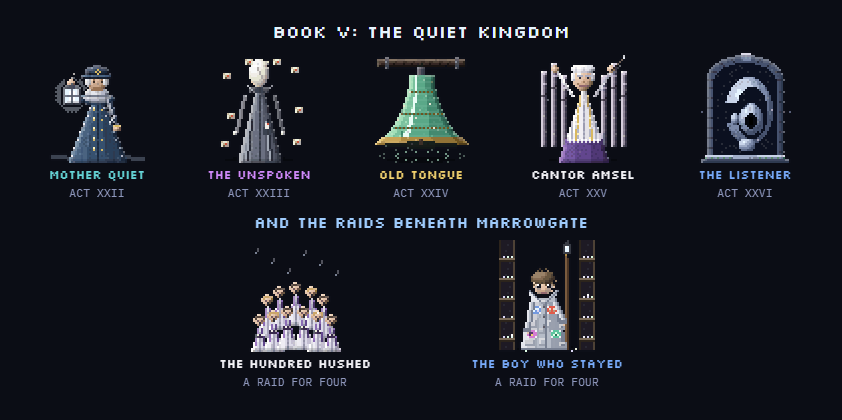

Lanterns of the Undervault
Текстова гра-підземелля в дусі старих MUD, з героями в піксельній графіці. Від A-Theme.
Грати в браузеріЕмберфол збудовано на кришці. Триста років тому Орден Ліхтаря закував щось під містом, і п'ять Каменів-оберегів тримають печатку. Цієї ночі Останній Ліхтар засвітився синім. І ти відповідаєш на поклик.
Кожна кімната написана прозою. Кожна команда — це слово, яке ти набираєш, або кнопка, яку торкаєшся. І кожен меч, посох і обладунок, які ти знаходиш, з'являються на твоєму піксельному герої.
Що в ній є
- Дванадцять класів: Warrior, Mage, Rogue, Cleric, Ranger, Necromancer, Druid, Brawler, Demon, Scion, Elementalist і Worg, кожен зі своїми вміннями, талантами й титулами.
- Історія у восьми книгах. Чотири вже тут: вісімдесят поверхів, двадцять сюжетних босів, і кожна книга закінчується вибором. Книги V–VIII вже в дорозі, починаючи з «Тихого королівства», і вони входять до повної гри.
- A story in eight books. Five are here: a hundred floors, twenty-five story bosses, and every book ends with a choice. Books VI to VIII are on the way, and they come with the full game.
- Bosses that warn you: every boss shows you what it is about to do. Defend, Dodge, or break it with a skill or a stun, and watch for the feint.
- Здобич, яку видно: зброя й обладунки змінюють вигляд твого героя, є легендарні речі, класові комплекти й чари.
- Бічні підземелля чотирьох рівнів складності, безкінечна Безодня з таблицею лідерів і щоденне підземелля.
- Side challenges behind the walls: some walls open only to your class's own skill, and behind them wait chess in a drowned court, a tower defence in the snow, a forge trial, a race up a stair and more, each with four tiers and a prize of its own. And secrets, for the curious.
- Friends: talk in the Common Room (a chatroom for everyone online, with the last day kept), race the same seed, play live together on the same floor, or form a party of four for the raids. No one free? The ghosts of your line fill the empty seats.
- Спадок, що переживе твоїх героїв: родові реліквії, які ростуть із тим, хто їх носить, родинна крипта, що пам'ятає кожного полеглого героя Hardcore, і Зала Відлунь кожного переможеного тобою вартового.
- Pets to tame and raise through ten forms, in five rarities; Hardcore mode, controller support, and it plays offline.
- Звуки бою зведено з вільних (CC0) звуків від Kenney, artisticdude і rubberduck; чари — з записів CC0 від lentikula (Basic Spell Impacts) і Julien Matthey.


Book V: The Quiet Kingdom

After the war, an envoy from Marrowgate waits in the Square, and Captain Varo sails you west. Marrowgate is a city where nobody speaks above a whisper, and under its cathedral is the fourth door. The thing behind it is not hungry, thirsty or cold. It is lonely, and it keeps every sound it hears.
- Twenty floors and five keepers, from Mother Quiet on the docks to the Listener under the choir.
- The quiet: every sound you make fills a noise bar, and something is listening.
- Three factions of Marrowgate ask you to choose, one act at a time.
- Three side challenges: the Whisper Wells, the Silent Duel and the Muffled Peal.
- Two raids: the Hundred Hushed, and the Boy Who Stayed.
Out on Tuesday 24 November, with the store. It comes with the full game; Founders keep Books I to IV.
Out now. It comes with the full game; Founders keep Books I to IV.
On the way. It comes with the full game; Founders keep Books I to IV.
Ціна
- Повну гру купують у самій грі: відкрий меню й вибери Отримати повну гру. Оплату обробляє Stripe (ти побачиш назву Link) — офіційний продавець, який також займається податками й чеками. Працюють картки, Apple Pay і Google Pay.
- У застосунку для Android можна також купити розблокування лише для Android через Google Play, за ціною, вказаною там.
- Історії поза сімома дверима можуть пізніше продаватися як окремі доповнення. Усе, що вже куплено, лишається твоїм.
- The store opens on Tuesday 24 November 2026, at 6 pm Toronto time. Until then every book is free to play, and every account made before then, and every hero on its own device before then, keeps Books I to IV for good. Sign in before then to be a Founder on every device.The store opened on 24 November 2026. Accounts made before then, and heroes that were on their own device before then, are Founders and keep Books I to IV for good. Book V and the books after it come with the full game.
Повернення коштів: протягом 14 днів після покупки, з будь-якої причини. Див. правила повернення.
Де грати
Уся гра працює на кожному з цих пристроїв. Увійди (через Google чи Discord) — і твої герої та покупка підуть за тобою з одного на інший.
- ПК, Mac, Linux чи Chromebook: відкрий playundervault.com у будь-якому браузері. Щоб установити як застосунок, скористайся Chrome чи Edge й натисни значок установлення в адресному рядку. Контролери працюють.
- Steam Deck: натисни кнопку Steam, тоді Живлення, Перейти на робочий стіл. Відкрий меню застосунків унизу ліворуч, тоді Система, Konsole, і встав
curl -fsSL https://playundervault.com/steamdeck.sh | bash(Steam + X відкриває клавіатуру). Коли з'явиться Done, двічі клацни «Повернутися в ігровий режим»: гра буде в Бібліотеці, у розділі Non-Steam. - iPhone та iPad: відкрий playundervault.com у Safari, торкнися «Поділитися», тоді «На початковий екран». Гра працює на весь екран і офлайн, як застосунок.
- Android: відкрий playundervault.com у Chrome, торкнися меню (⋮), тоді «Установити застосунок». Або встанови гру з Google Play чи завантаж undervault.apk.
Контакти
Запитання, проблеми з покупкою чи повідомлення про помилки: support@playundervault.com. Зазвичай відповідаємо протягом двох робочих днів.
Come and talk to other players on Discord, or follow @undervaultgame on Instagram.